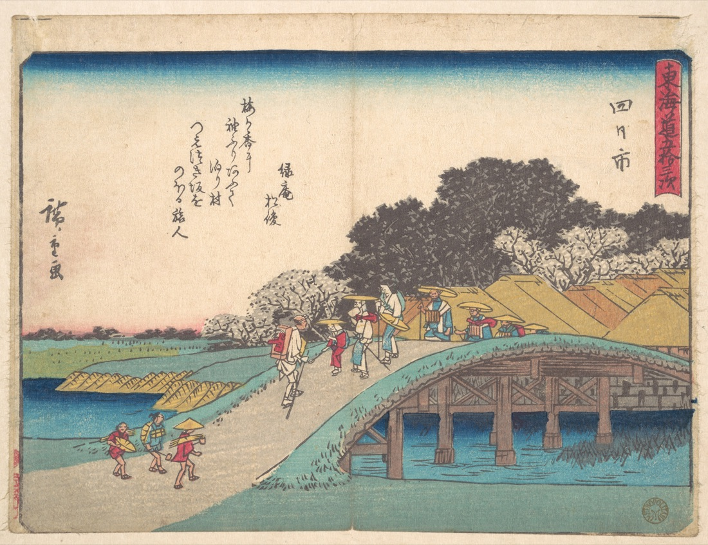
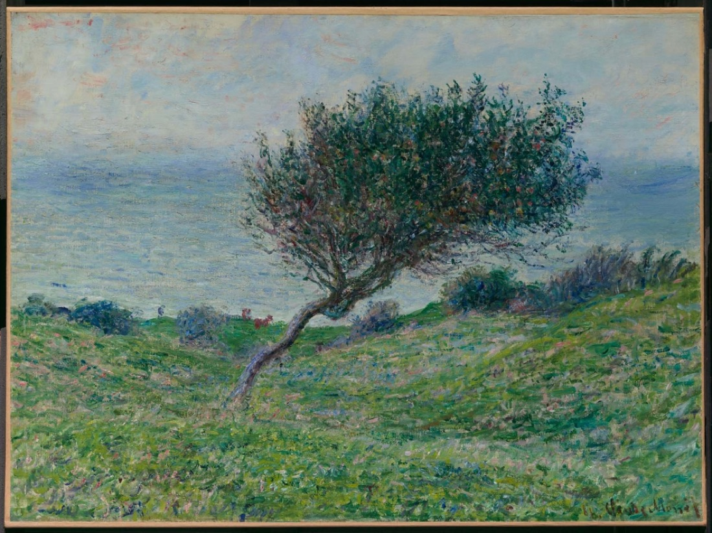
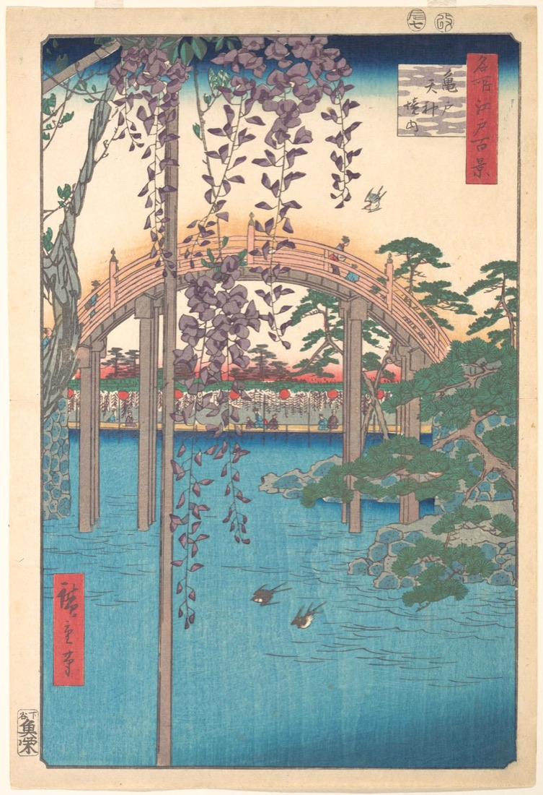
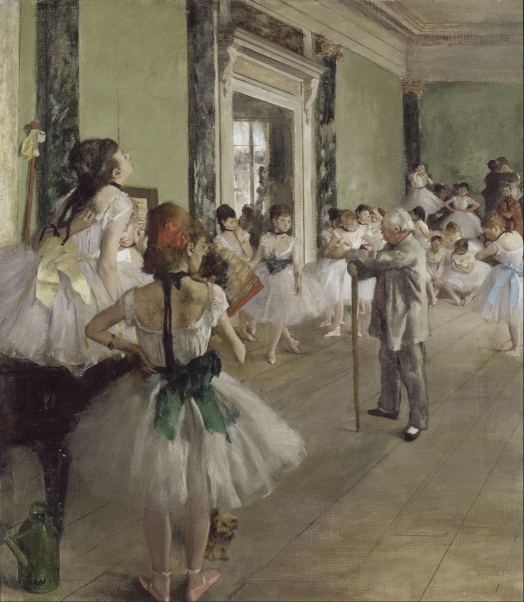
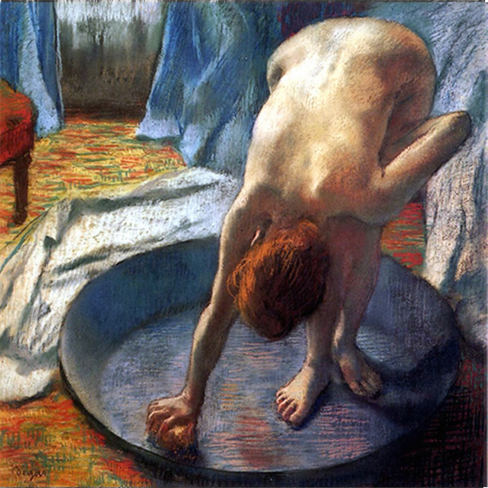
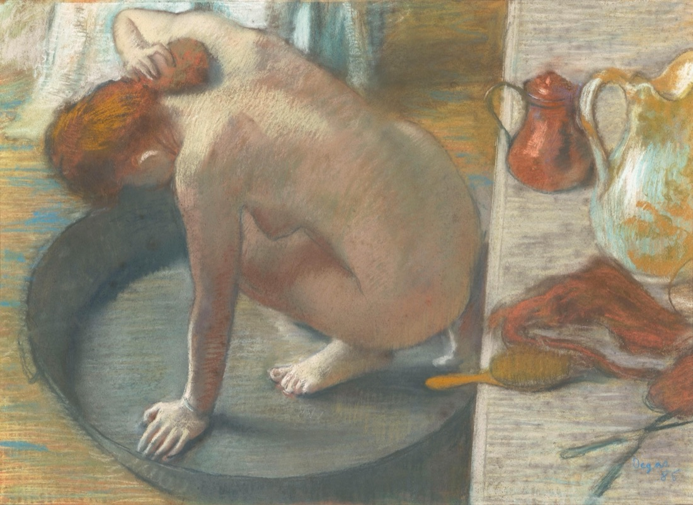
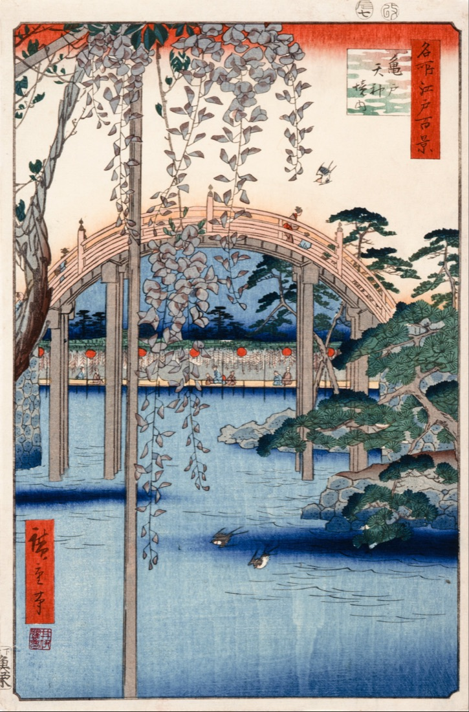
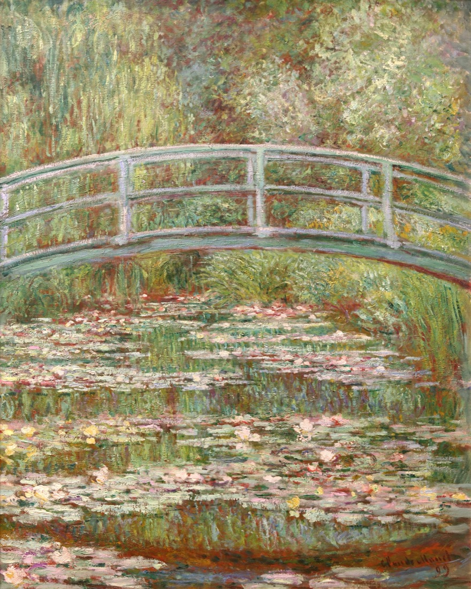
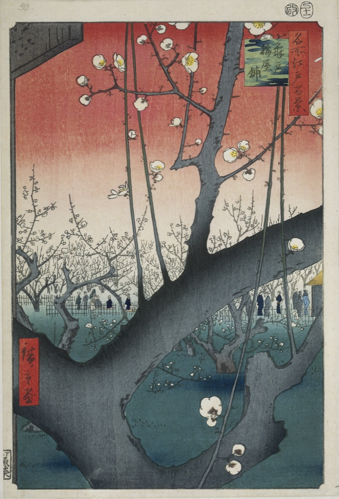
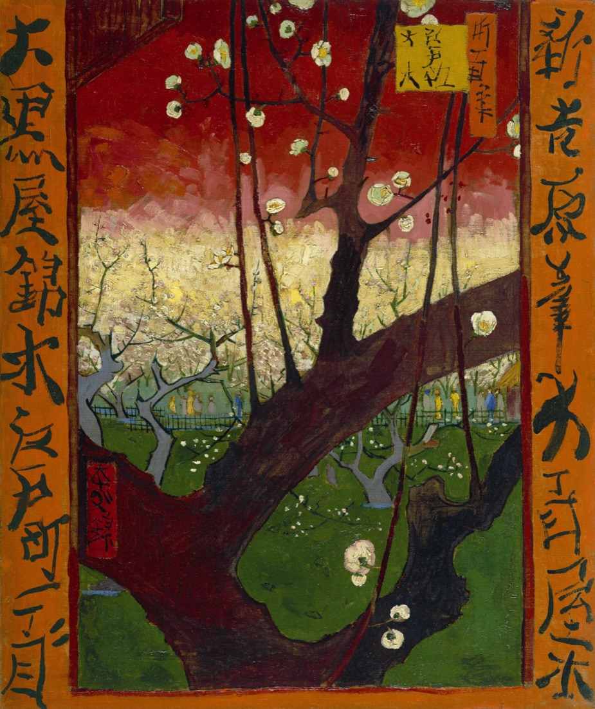

🌅 Japonisme: 浮世绘如何重塑西方现代艺术
"如果非要把我与其他人放在一起，那就拿我和日本的古大师们比吧；他们那精致的审美总是让我狂喜……他们通过阴影唤出存在，通过局部勾勒出整体。" —— 莫奈 (Claude Monet)
1. 💨 瞬间的记录 (fleeting moment)
西方的古典风景画常常描绘恒定、崇高、庄严、几乎永恒不变的景观。而浮世绘（Ukiyo-e，字面意为“浮生、瞬息万变之世界的绘画”）则极其迷恋转瞬即逝的瞬间：一阵狂风、一记惊雷、一朵突然飘过的云。
莫奈的《特鲁维尔海岸》一反西方古典构图，让一棵枯树突兀地堵在画面中心，树枝和草坡向一侧剧烈倾斜。这种对“瞬时风力”和光影的捕捉，直接吸取了葛饰北斋与歌川广重描绘“暴风雨、骤雨、疾风吹落旅人帽子”的画面张力。

🇯🇵 歌川广重《东海道五十三次·四日市》
描绘大风吹落斗笠、衣角飞扬的戏剧性瞬息

🇫🇷 莫奈《特鲁维尔海岸》(1881)
同样用向左倾斜的枝叶和强烈的草势呈现风的瞬间
2. 📐 大胆的斜切构图 (cropping & diagonal composition)
古典透视法要求画面像一个对称平衡的镜框，重要人物必须居中，物体必须完整。而浮世绘引入了斜切对角线的构图：一条大胆的斜线直接将画面对半分开。
德加 (Edgar Degas) 极其敏锐地抓住了这个特点。在《舞蹈课》中，大片的木地板构成了一条极其陡峭的对角斜线，将练舞的女孩们推向画面的右上侧。前景中的舞女身体甚至被画框直接“切掉”了一半，这种前所未有的“不完整”彻底打破了西方的构图陈规，充满了生活的动态。

🇯🇵 歌川广重《风流源氏·月夜筑地》
斜线阳台栏杆对分画面，人物在右侧斜线上排列

🇫🇷 德加《舞蹈课》(1874)
倾斜的地板对角线将画面对分，前景舞女被切开
3. 👁️ 高视角俯瞰 (high perspective)
西方的透视法基本是人眼平视，而浮世绘经常采用高视角的俯瞰镜头（被称为“鸟瞰”或“吹拔屋台”法：仿佛掀掉屋顶从空中俯视室内）。
德加在画《浴盆》时，视角几乎是在浴盆正上方，木制浴缸的边缘在右侧形成了一条几乎是正圆的弧线，倾斜的桌面摆满了洗漱用品。这种陡峭、下压的透视完全抛弃了传统的空间纵深感，将三维空间压平成为了纯粹的几何色块。

🇯🇵 鸟居清长 等 / 经典仕女图
俯视视角下的仕女梳妆，地板和镜子形成二维平面

🇫🇷 德加《浴盆》(1886)
极其陡峭的高空俯视，三维空间被压成平面色块
4. 🌉 拱桥、莲池与东方意境 (oriental bridge & garden)
浮世绘不仅仅在构图上启发了印象派，更成为了他们精神上的避难所。莫奈直接在吉维尼 (Giverny) 的私人花园里，挖了一个莲花池，并聘请日本花匠、种满亚洲花卉，造了一座几乎与歌川广重《龟户天神境内》一模一样的日本拱桥。
在这里，莫奈画下了他名垂青史的《睡莲》系列。在近乎没有地平线的画面中，池水、落影、倒影和睡莲融为一体，他彻底打破了西方画里“天与地”的二元对立，进入了虚实相生、纯粹装饰性的东方抽象意境。

🇯🇵 歌川广重《名所江户百景·龟户天神境内》
著名的圆形拱桥与垂挂下的藤花，极度夸张的俯仰透视

🇫🇷 莫奈《睡莲池上的拱桥》(1899)
几乎完全复刻了浮世绘的拱桥跨度与池塘草木结构
5. 🌸 平面化与纯粹轮廓线 (flat colors & dark outlines)
凡高 (Vincent van Gogh) 在日本主义中走得最远。他买下了数百张浮世绘，并和弟弟提奥说：“日本艺术是一切艺术的根基，它让我们变得更纯粹、更欢快。”
凡高不屑于西方那种用细腻笔触堆砌的过渡，他直接学习浮世绘的平涂大色块和黑色轮廓线。他甚至极其精细地双倍比例放大了歌川广重的《龟户梅屋铺》，用翠绿和亮红直接覆盖画布，并在边缘用黑、褐色线勾边。这种极其耀眼的对比色和强烈的线条，不仅启发了凡高自己的巅峰期，也拉开了野兽派与表现主义的序幕。

🇯🇵 歌川广重《名所江户百景·龟户梅屋铺》
通过前景极度放大的梅树主干去框景远处的红霞

🇳🇱 凡高《临摹广重：盛开的梅树》(1887)
凡高极其忠实地临摹，但在色彩和边框文字上做了个人化的耀眼狂飙